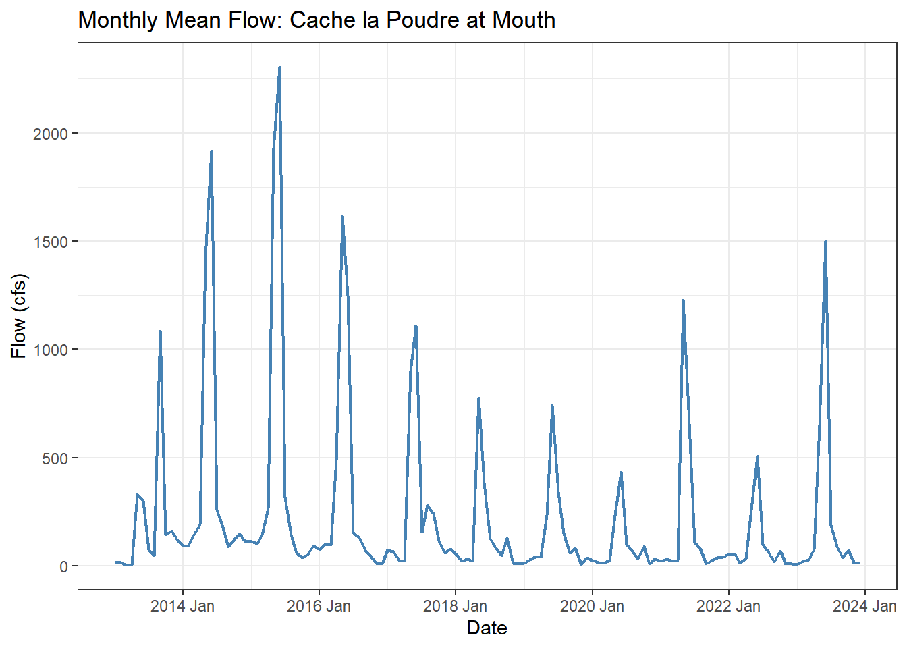
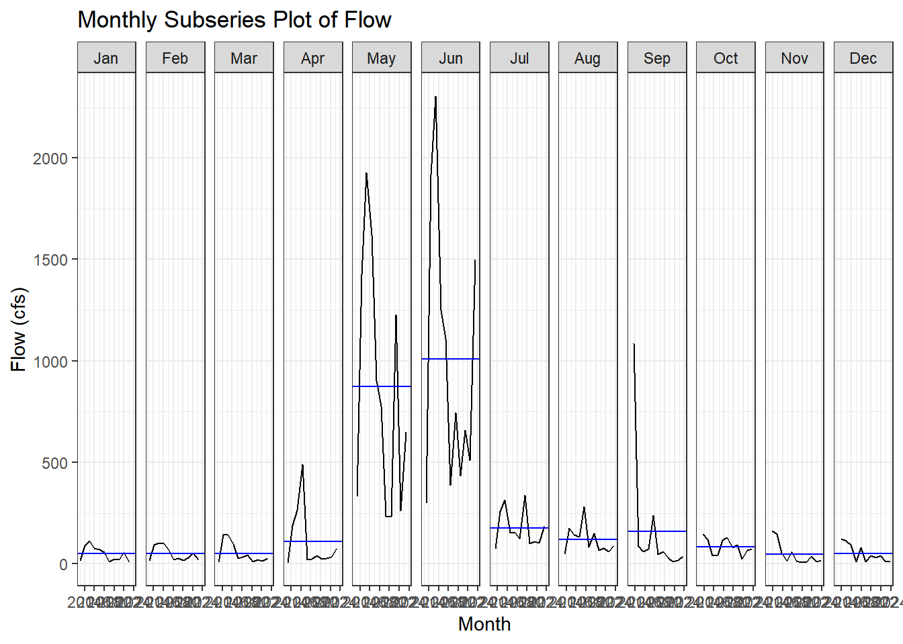
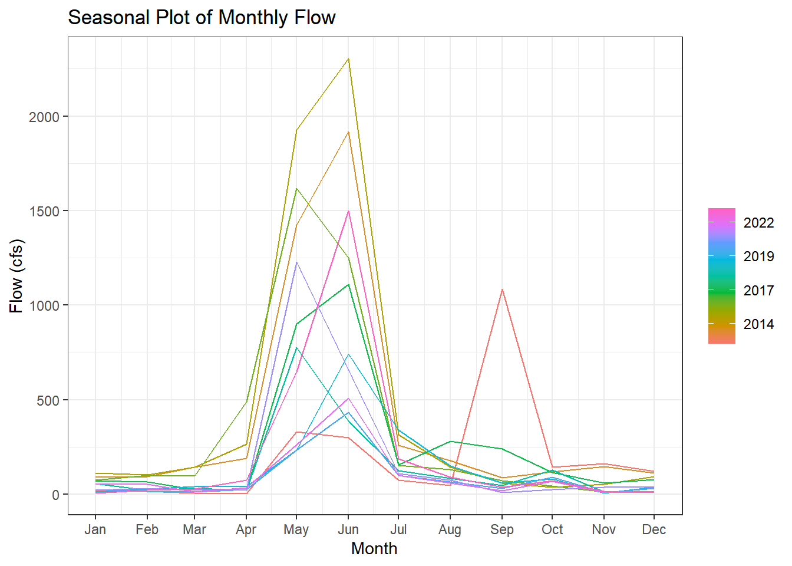
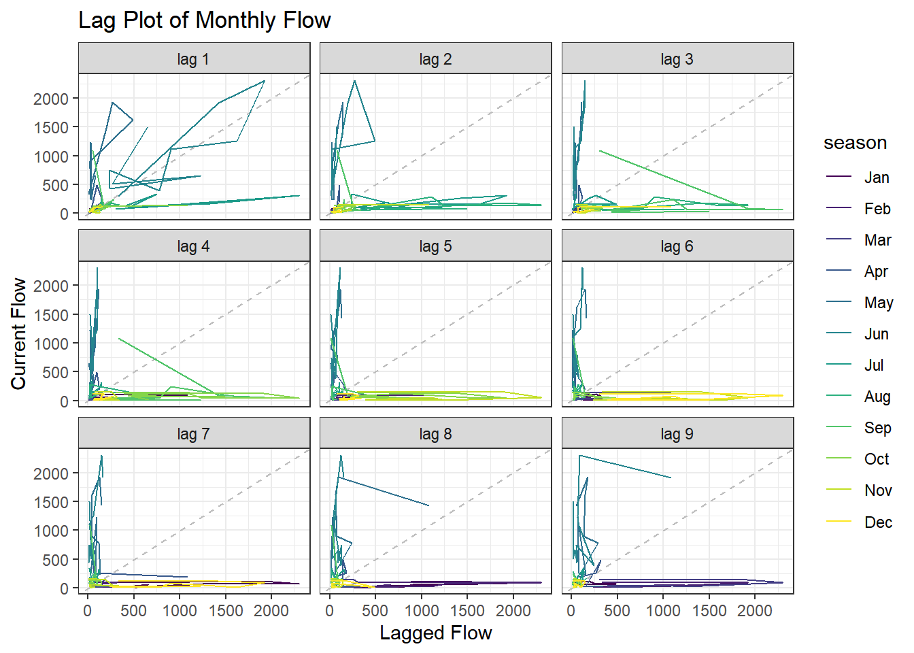
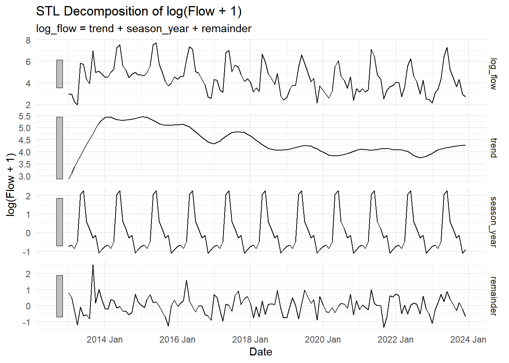

library(tidyverse)
library(plotly)
library(climateR)
library(dataRetrieval)
library(terra)
library(exactextractr)
library(tidymodels)
library(tsibble)
library(feasts)
library(modeltime)
library(timetk)
library(tseries)Lab 6: Timeseries Data
Intro
Getting the Data
Streamflow
poudre_flow <- readNWISdv(
siteNumber = "06752260",
parameterCd = "00060",
startDate = "2013-01-01",
endDate = "2023-12-31"
) |>
renameNWISColumns() |>
mutate(Date = yearmonth(Date)) |>
group_by(Date) |>
summarise(Flow = mean(Flow))Historic Climate
basin <- findNLDI(nwis = "06752260", find = "basin")
sdate <- as.Date("2013-01-01")
edate <- as.Date("2023-12-31")
gm <- getTerraClim(
AOI = basin$basin,
var = c("tmax", "ppt", "srad"),
startDate = sdate,
endDate = edate
) |>
unlist() |>
rast() |>
exact_extract(basin$basin, "mean", progress = FALSE)
historic <- mutate(gm, id = "gridmet") |>
pivot_longer(cols = -id) |>
mutate(name = sub("^mean\\.", "", name)) |>
tidyr::extract(name, into = c("var", "index"), "(.*)_([^_]+$)") |>
mutate(index = as.integer(index)) |>
mutate(Date = yearmonth(seq.Date(sdate, edate, by = "month")[as.numeric(index)])) |>
pivot_wider(id_cols = Date, names_from = var, values_from = value) |>
right_join(poudre_flow, by = "Date")
# Validate: should have 132 rows (11 years × 12 months). If fewer, climate data
# is missing for some months and those flow months were silently dropped.
stopifnot("Climate join dropped flow months — check GridMET download" = nrow(historic) == 132)Future Climate
sdate <- as.Date("2024-01-01")
edate <- as.Date("2033-12-31")
maca <- getMACA(
AOI = basin$basin,
var = c("tasmax", "pr", "rsds"),
timeRes = "month",
startDate = sdate,
endDate = edate
) |>
unlist() |>
rast() |>
exact_extract(basin$basin, "mean", progress = FALSE)
future <- mutate(maca, id = "maca") |>
pivot_longer(cols = -id) |>
mutate(name = sub("^mean\\.", "", name)) |>
tidyr::extract(name, into = c("var", "index"), "(.*)_([^_]+$)") |>
mutate(index = as.integer(index)) |>
mutate(Date = yearmonth(seq.Date(sdate, edate, by = "month")[as.numeric(index)])) |>
pivot_wider(id_cols = Date, names_from = var, values_from = value)
# Rename the 3 climate columns to match GridMET names (Date column stays first)
stopifnot("Unexpected MACA column count" = ncol(future) == 4)
names(future)[2:4] <- c("ppt", "srad", "tmax") # order matches getMACA var request
future <- mutate(future, tmax = tmax - 273.15) # Kelvin → °CMy Turn
Convert to tsibble
historic_ts <- historic |>
as_tsibble(index = Date)
glimpse(historic_ts)Rows: 132
Columns: 5
$ Date <mth> 2013 Jan, 2013 Feb, 2013 Mar, 2013 Apr, 2013 May, 2013 Jun, 2013 …
$ ppt <dbl> 10.510324, 17.357395, 26.433271, 53.476067, 42.237366, 12.467628,…
$ srad <dbl> 97.94525, 124.68666, 180.27805, 216.70424, 269.29276, 292.37350, …
$ tmax <dbl> 1.927377, 1.548743, 6.040504, 6.767159, 14.271442, 23.660526, 24.…
$ Flow <dbl> 18.125806, 18.046429, 8.208710, 5.940667, 332.579677, 299.989333,…Plot the Time Series
Flow Over Time
historic_ts |>
ggplot(aes(x = Date, y = Flow)) +
geom_line(linewidth = 0.8, color = "steelblue") +
labs(
title = "Monthly Mean Flow: Cache la Poudre at Mouth",
x = "Date",
y = "Flow (cfs)"
) +
theme_bw()
Interactive Flow Over Time
historic_ts |>
as_tibble() |>
mutate(Date = as.Date(Date)) |>
plot_ly(
x = ~Date,
y = ~Flow,
type = "scatter",
mode = "lines",
line = list(color = "steelblue")
) |>
layout(
title = "Interactive Monthly Mean Streamflow",
xaxis = list(title = "Date"),
yaxis = list(title = "Flow (cfs)")
)Seasonal Diagnostics
Subseries Plot
gg_subseries(historic_ts, Flow) +
labs(
title = "Monthly Subseries Plot of Flow",
x = "Month",
y = "Flow (cfs)"
) +
theme_bw()
Seasonal Plot
gg_season(historic_ts, Flow) +
labs(
title = "Seasonal Plot of Monthly Flow",
x = "Month",
y = "Flow (cfs)"
) +
theme_bw()
In these plots, the “seasons” are runoff period (April- Late June) and dry periods (July to Mid May). The seasonal shape is fairly consistent overall: flow is low in winter, starts rising in spring, peaks strongly in May–June, and then drops quickly by July. There is still noticeable year-to-year variation in the size of the peak, so the timing is fairly stable but has outliers such as September 2013 (when there was flooding). The large May–June peak is driven by spring snowmelt runoff from the mountain snowpack in the Cache la Poudre basin. Some years also show unusual late-summer or early spikes, likely from rain events, but these are much smaller and less consistent than the snowmelt peak.
Stationary and Autocorrelation
Check lag
Lag Plot
gg_lag(historic_ts, Flow) +
labs(
title = "Lag Plot of Monthly Flow",
x = "Lagged Flow",
y = "Current Flow"
) +
theme_bw()
Stationary Test
historic_ts <- historic |>
mutate(log_flow = log1p(Flow)) |>
as_tsibble(index = Date)
flow_vec <- historic_ts |>
pull(log_flow)
adf.test(flow_vec)
Augmented Dickey-Fuller Test
data: flow_vec
Dickey-Fuller = -7.3292, Lag order = 5, p-value = 0.01
alternative hypothesis: stationarykpss.test(flow_vec)
KPSS Test for Level Stationarity
data: flow_vec
KPSS Level = 0.50753, Truncation lag parameter = 4, p-value = 0.03997The formal tests give mixed but mostly non-stationary evidence. The ADF test has a p-value of 0.01, which suggests rejecting the null of non-stationarity, so based on ADF the series appears stationary. But the KPSS test has a p-value of 0.04001, which rejects the null of stationarity, so by KPSS the series appears non-stationary. I believe the series is not fully stationary, and ARIMA will likely need at least d = 1 differencing.
The lag plot also supports that conclusion, as it shows strong autocorrelation, since points are not a random cloud. Since the structure is not a simple linear band and seasonal peaks dominate relationships, this can suggest the series has strong seasonal and flow-regime structure rather than a stable stationary process.
Decomposition
flow_decomp <- historic_ts |>
model(STL(log_flow ~ season(window = "periodic"))) |>
components()autoplot(flow_decomp) +
labs(
title = "STL Decomposition of log(Flow + 1)",
y = "log(Flow + 1)"
) +
theme_minimal()
The trend suggests that Poudre flow increased early in the time period, then declined after the mid-2010s, with a small rebound near the end. This may indicate some long-term reduction in flow consistent with climate pressure or stream allocation demand. The seasonal component is driven mainly by spring snowmelt with a strong May–June runoff peak, has a low winter flow due to precipitation being stored in the snowpack, and declining summer flows influenced by the end of snowmelt along with irrigation withdrawals and reservoir management. The remainder highlights years where flow was unusually high or low relative to the normal seasonal pattern, likely due to especially wet, dry, or fast melt conditions.
Model Time Prediction
Data Preparation
Convert Historic tsibble to plain tibble
historic_tbl <- historic |>
as_tibble() |>
mutate(
Date = seq.Date(
from = as.Date("2013-01-01"),
by = "month",
length.out = n()
),
log_flow = log1p(Flow)
)
glimpse(historic_tbl)Rows: 132
Columns: 6
$ Date <date> 2013-01-01, 2013-02-01, 2013-03-01, 2013-04-01, 2013-05-01, …
$ ppt <dbl> 10.510324, 17.357395, 26.433271, 53.476067, 42.237366, 12.467…
$ srad <dbl> 97.94525, 124.68666, 180.27805, 216.70424, 269.29276, 292.373…
$ tmax <dbl> 1.927377, 1.548743, 6.040504, 6.767159, 14.271442, 23.660526,…
$ Flow <dbl> 18.125806, 18.046429, 8.208710, 5.940667, 332.579677, 299.989…
$ log_flow <dbl> 2.951039, 2.946880, 2.220150, 1.937398, 5.809882, 5.707075, 4…future_tbl <- future |>
as_tibble() |>
mutate(
Date = seq.Date(
from = as.Date("2024-01-01"),
by = "month",
length.out = n()
)
)
glimpse(future_tbl)Rows: 121
Columns: 4
$ Date <date> 2024-01-01, 2024-02-01, 2024-03-01, 2024-04-01, 2024-05-01, 2024…
$ ppt <dbl> 40.688091, 44.990303, 12.761312, 20.531368, 1.680828, 92.447021, …
$ srad <dbl> 126.26448, 183.16980, 241.72774, 278.91016, 299.08728, 273.92786,…
$ tmax <dbl> 4.2115417, 8.5879761, 14.3245483, 20.7030273, 26.8691650, 26.0306…Check
required_predictors <- c("Date", "ppt", "srad", "tmax")
stopifnot(all(required_predictors %in% names(historic_tbl)))
stopifnot(all(required_predictors %in% names(future_tbl)))Train Test Split
splits <- time_series_split(
historic_tbl,
assess = "24 months",
cumulative = TRUE
)
training <- training(splits)
testing <- testing(splits)Model Definition
mods <- list(
arima_reg() |>
set_engine("auto_arima"),
arima_boost(min_n = 2, learn_rate = 0.015) |>
set_engine("auto_arima_xgboost"),
prophet_reg() |>
set_engine("prophet"),
prophet_boost() |>
set_engine("prophet_xgboost")
)Model Fitting
training_model <- training |>
select(-Flow)
models <- map(
mods,
~ fit(.x, log_flow ~ ., data = training_model)
)
models_tbl <- as_modeltime_table(models)Calibration and Accuracy
calibration_tbl <- models_tbl |>
modeltime_calibrate(
new_data = testing |> select(-Flow)
)
accuracy_tbl <- calibration_tbl |>
modeltime_accuracy()print(accuracy_tbl)# A tibble: 4 × 9
.model_id .model_desc .type mae mape mase smape rmse rsq
<int> <chr> <chr> <dbl> <dbl> <dbl> <dbl> <dbl> <dbl>
1 1 REGRESSION WITH ARIMA(3,1… Test 0.581 15.4 0.589 15.5 0.684 0.773
2 2 ARIMA(1,0,1)(0,1,1)[12] W… Test 0.469 14.5 0.476 12.9 0.595 0.831
3 3 PROPHET W/ REGRESSORS Test 0.580 16.0 0.588 16.7 0.691 0.783
4 4 PROPHET W/ XGBOOST ERRORS Test 0.727 19.4 0.737 20.3 0.802 0.742All four models outperform a naïve seasonal forecast because their MASE values are all below 1, so each model adds real predictive skill. The strongest model is ARIMA with XGBoost, which has the best values across most metrics: the lowest MAE (0.469), MAPE (14.50%), MASE (0.476), sMAPE (12.90), and RMSE (0.595), and the highest R² (0.831). Base ARIMA and base Prophet with regressors perform similarly, with ARIMA slightly better on most error metrics, while Prophet with XGBoost is the weakest model, with the highest errors and lowest R².
Looking at the individual metrics, MAE shows ARIMA-boost has the smallest average error, MAPE suggests about 14–19% typical error but as mentioned in class, may be inflated in low-flow months, and RMSE shows ARIMA-boost handles large misses best, which is important for snowmelt peaks. R² also confirms ARIMA-boost explains the most variability. Comparing boosted versus base models, boosting improves ARIMA, so the nonlinear climate signal is useful.
Forecast
test_forecast_log <- calibration_tbl |>
modeltime_forecast(
new_data = testing |> select(-Flow),
actual_data = historic_tbl |> select(Date, log_flow)
)
test_forecast_cfs <- test_forecast_log |>
mutate(
.value = expm1(.value),
.conf_lo = expm1(pmax(.conf_lo, 0)),
.conf_hi = expm1(.conf_hi)
)print(test_forecast_log)# Forecast Results
# A tibble: 228 × 7
.model_id .model_desc .key .index .value .conf_lo .conf_hi
<int> <chr> <fct> <date> <dbl> <dbl> <dbl>
1 NA ACTUAL actual 2013-01-01 2.95 NA NA
2 NA ACTUAL actual 2013-02-01 2.95 NA NA
3 NA ACTUAL actual 2013-03-01 2.22 NA NA
4 NA ACTUAL actual 2013-04-01 1.94 NA NA
5 NA ACTUAL actual 2013-05-01 5.81 NA NA
6 NA ACTUAL actual 2013-06-01 5.71 NA NA
7 NA ACTUAL actual 2013-07-01 4.34 NA NA
8 NA ACTUAL actual 2013-08-01 3.91 NA NA
9 NA ACTUAL actual 2013-09-01 6.99 NA NA
10 NA ACTUAL actual 2013-10-01 4.99 NA NA
# ℹ 218 more rowsprint(test_forecast_cfs)# Forecast Results
# A tibble: 228 × 7
.model_id .model_desc .key .index .value .conf_lo .conf_hi
<int> <chr> <fct> <date> <dbl> <dbl> <dbl>
1 NA ACTUAL actual 2013-01-01 18.1 NA NA
2 NA ACTUAL actual 2013-02-01 18.0 NA NA
3 NA ACTUAL actual 2013-03-01 8.21 NA NA
4 NA ACTUAL actual 2013-04-01 5.94 NA NA
5 NA ACTUAL actual 2013-05-01 333. NA NA
6 NA ACTUAL actual 2013-06-01 300. NA NA
7 NA ACTUAL actual 2013-07-01 75.6 NA NA
8 NA ACTUAL actual 2013-08-01 48.8 NA NA
9 NA ACTUAL actual 2013-09-01 1085. NA NA
10 NA ACTUAL actual 2013-10-01 146. NA NA
# ℹ 218 more rowsThe predictions track the general pattern of the observed flow during 2022–2023. The models capture the seasonal cycle (the low winter flows and the rise into early summer) but they are less accurate on the biggest runoff months. For example, in June 2023 the observed flow is about 1499 cfs, while predictions range from about 354-893 cfs, so the models underestimate the large peak. In contrast, for lower-flow months such as November 2022 and March 2023, several predictions are closer to the observed values.
The confidence intervals are wide and genrally cover observed values, especially during the large flow months, which suggests the uncertainty bands are doing their job. There are not obvious discontinuities at the 2022 training–test boundary, but there is a noticeable shift from fitted historical values to out-of-sample forecasts. My takeaway is that the models reproduce the timing of seasonal behavior better than the exact magnitude of extreme snowmelt peaks.
Refit to Full Data Set
refit_tbl <- models_tbl |>
modeltime_refit(
data = historic_tbl |> select(-Flow)
)
print(refit_tbl)# Modeltime Table
# A tibble: 4 × 3
.model_id .model .model_desc
<int> <list> <chr>
1 1 <fit[+]> REGRESSION WITH ARIMA(3,1,0)(2,0,0)[12] ERRORS
2 2 <fit[+]> UPDATE: ARIMA(1,0,0)(0,1,1)[12] WITH DRIFT W/ XGBOOST ERRO…
3 3 <fit[+]> PROPHET W/ REGRESSORS
4 4 <fit[+]> PROPHET W/ XGBOOST ERRORS Refitting does change accuracy metrics, because the models are being trained on the largest dataset rather than evaluated on the test period. The purpose of refitting is to let each model use all available data from 2013–2023 before forecasting 2024–2033. The earlier accuracy metrics are still the best measure of true predictive performance, but refitting is done to improve the final future forecast by re-estimating model parameters with more data.
Forecast into The Future (2024-2033)
future_forecast_log <- refit_tbl |>
modeltime_forecast(
new_data = future_tbl,
actual_data = historic_tbl |> select(Date, log_flow)
)future_pred_cfs <- future_forecast_log |>
filter(.key == "prediction") |>
mutate(.value = expm1(.value))
if (".conf_lo" %in% names(future_pred_cfs)) {
future_pred_cfs <- future_pred_cfs |>
mutate(.conf_lo = expm1(pmax(.conf_lo, 0)))
}
if (".conf_hi" %in% names(future_pred_cfs)) {
future_pred_cfs <- future_pred_cfs |>
mutate(.conf_hi = expm1(.conf_hi))
}
future_pred_cfs# Forecast Results
# A tibble: 484 × 5
.model_id .model_desc .key .index .value
<int> <chr> <fct> <date> <dbl>
1 1 REGRESSION WITH ARIMA(3,1,0)(2,0,0)[12] ER… pred… 2024-01-01 28.6
2 1 REGRESSION WITH ARIMA(3,1,0)(2,0,0)[12] ER… pred… 2024-02-01 76.4
3 1 REGRESSION WITH ARIMA(3,1,0)(2,0,0)[12] ER… pred… 2024-03-01 39.9
4 1 REGRESSION WITH ARIMA(3,1,0)(2,0,0)[12] ER… pred… 2024-04-01 88.1
5 1 REGRESSION WITH ARIMA(3,1,0)(2,0,0)[12] ER… pred… 2024-05-01 231.
6 1 REGRESSION WITH ARIMA(3,1,0)(2,0,0)[12] ER… pred… 2024-06-01 1168.
7 1 REGRESSION WITH ARIMA(3,1,0)(2,0,0)[12] ER… pred… 2024-07-01 86.6
8 1 REGRESSION WITH ARIMA(3,1,0)(2,0,0)[12] ER… pred… 2024-08-01 50.2
9 1 REGRESSION WITH ARIMA(3,1,0)(2,0,0)[12] ER… pred… 2024-09-01 50.9
10 1 REGRESSION WITH ARIMA(3,1,0)(2,0,0)[12] ER… pred… 2024-10-01 37.4
# ℹ 474 more rowsWrap-Up
The models do not project identical futures. ARIMA-based models and Prophet-based models tended to preserve the seasonal pattern, with low winter flows and a spring snowmelt peak, but they diverge in the magnitude of some future peaks. For example, in June 2033 forecasts range from about 229 cfs for Prophet with XGBoost to about 413 cfs for Prophet with regressors, while the ARIMA models fall in between at about 251 cfs and 300 cfs. This difference reflects each models different assumptions with ARIMA relying more on repeating autocorrelation and seasonal structure, while Prophet can allow a more flexible trend and can produce more variable future trajectories.
For forecast quality, I would recommend the ARIMA with XGBoost model for CWCB water-supply planning because it had the best test performance: MAE = 0.469, MAPE = 14.50%, MASE = 0.476, sMAPE = 12.90, RMSE = 0.595, and R² = 0.831. It also outperformed the base ARIMA, base Prophet, and Prophet with XGBoost, and appears to balance seasonal time-series structure with the added climate predictors best. Negative predictions should not be an issue here because fitting on log_flow=log1p(Flow) and back-transforming with expm1() keeps predictions positive but if a model produced negative flow, I would use the log-transformation in production.
Since the MACA inputs are based on a specific emissions scenario, uncertainty in future temperature, precipitation, and radiation propagates directly into uncertainty in streamflow forecasts. These results are conditional forecasts due to them being based on a specific set of conditions, not exact predictions. Finally, the biggest path for improvement would be adding predictors that are more physically tied to runoff generation, such as snowpack/SWE (controls general total amount), upstream reservoir storage and release rules (can account for random increase in flow), and irrigation diversions (accounts for many diversion in the basin. Other factors such as municipality pipelines/withdrawls, releases from the CBT compact, and other industrial demands could help improve forecasting as well.